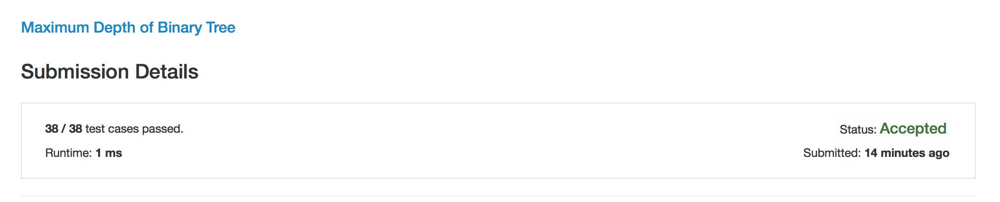
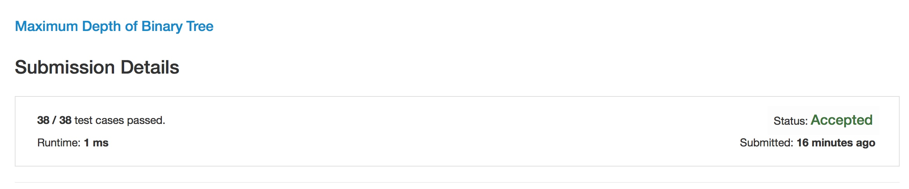

昨天笔试的时候做到了一题求二叉树深度的问题，刚刚在Leetcode上刷题的时候刚好也遇到了，就顺手刷了。但是仔细思考发现，这个问题背后所反应的思想很值得我注重，因此写了这篇文章。
这个算法并不难，利用递归可以非常简单的求解。因此我在看到题目之后，给出的第一个解法是这样的(Java版本):
/**
* Definition for a binary tree node.
* public class TreeNode {
* int val;
* TreeNode left;
* TreeNode right;
* TreeNode(int x) { val = x; }
* }
*/
public class Solution {
public int maxDepth(TreeNode root) {
if(root == null) return 0;
int depth = 0;
if(root.left != null && root.right != null){
int l = maxDepth(root.left);
int r = maxDepth(root.right);
depth = (l > r? l : r) + 1;
} else if (root.left == null){
depth = maxDepth(root.right) + 1;
} else if (root.right == null){
depth = maxDepth(root.left) + 1;
} else {
depth = 0;
}
return depth;
}
}

解法是没有错误的，并且Leetcode上也是直接Accept了，但总是看起来让人觉得这个代码非常的丑，太杂乱了。
因此我又花了一点时间思考如何优化这段代码，让它看起来不至于这么的复杂。
在这个代码中，复杂的部分全部在 if-else代码块中，那么是不是可以通过其他的方式来取消掉这些判断呢？
答案是肯定的。因此有了下面的代码(Java版本):
/**
* Definition for a binary tree node.
* public class TreeNode {
* int val;
* TreeNode left;
* TreeNode right;
* TreeNode(int x) { val = x; }
* }
*/
public class Solution {
public int maxDepth(TreeNode root) {
if(root == null) return 0;
int lDepth = maxDepth(root.left);
int rDepth = maxDepth(root.right);
return lDepth > rDepth? lDepth + 1 : rDepth + 1;
}
}

可以看到，时间复杂度几乎没有变化，但是从直观上，第二段代码比之之前的版本，代码非常的简洁，并且让人一眼就能看懂意思。
很不幸，在笔试的时候我用的是第一段代码，并且没有考虑到优化和精简问题，不知道这个是否有影响。
对我而言，这两段代码给我的启发是巨大的。同样的效率的代码，如何能写的更漂亮，让别人看起来更舒服，也很重要。
希望以后能够多注意类似的问题，不再犯同样的错误。